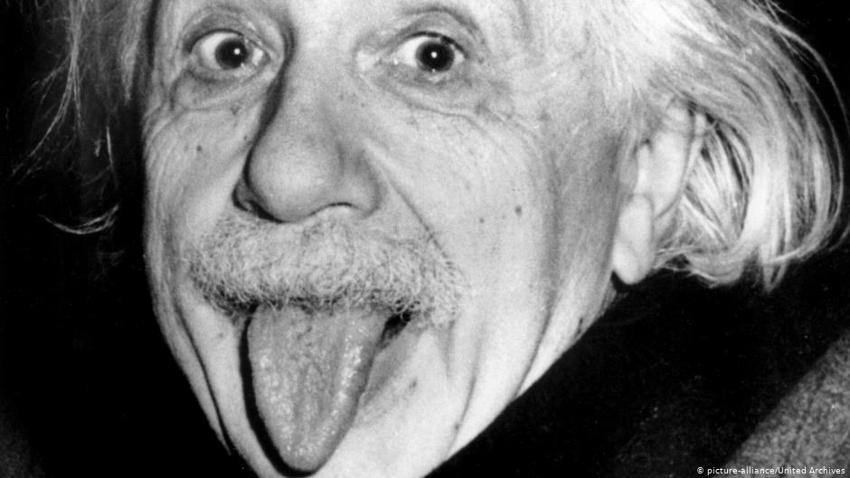

Image of Albert Einstin
Albert Einstin's tribute
the Early years
- 1879 Born March 14 at 11:30 AM in Ulm, Germany
- 1880 Einstein family moves to Munich
- 1881 Sister Maja (Maria) is born
- 1884 The Compass - A gift from his Uncle sparks his wonder
- 1885-1888 Pupil at Catholic elementary school in Munich Private lessons in Judaism at home
- 1888 Pupil at Luitpold-Gymnasium, Munich for the next six years
- 1889 Meets 21 year old student, Max Talmud. Introduction to key science and philosophy texts Religious instruction at school (until 1892)
- 1892 Einstein is not Bar Mitzvahed. Technically, not a member of the Jewish community
- 1894 Parents move to Milan Six months later, Einstein leaves Gymnasium without completing his schooling and joins his family in Pavia, Italy
the swiss years
- 1895-96 Pupil at cantonal school in Aarau, Switzerland
- 1896 Renounces his German citizenship
- 1896-1900 Student at the Polytechnic (later the Federal Institute of Technology), Zurich
- 1901 Acquires Swiss citizenship Completes his first scientific paper
- 1901-02 Temporary teaching position at school in Schaffhausen, Switzerland
- 1902 Daughter Lieserl born to Mileva Maric in Novi Sad, Hungary Appointed as technical expert third class at the Swiss Patent Office in Bern
- 1903 Marriage to Mileva Maric in Bern Founds "Akademie Olympia" with Conrad Habicht and Maurice Solovine Daughter Lieserl probably put up for adoption
- 1904 Son Hans Albert born in Bern
- 1905 The annus mirabilis (miracle year) : completes papers on light quanta, Brownian motion, and special theory of relativity Receives Ph.D. from Zurich University
- 1906 Promoted to technical expert second class at the Swiss Patent Office
- 1907 Discovers the principle of equivalence
- 1908 Appointed lecturer at Bern University
- 1909 Resigns from Patent Office Appointed Associate Professor of theoretical physics at Zurich University
- 1910 Second son Eduard born in Bern
- 1911 Predicts bending of light
- 1911-12 Professor of theoretical physics at German University of Prague
- 1912-14 Professor of theoretical physics at the Federal Institute of Technology, Zuric
the Berlin years
- 1914 Appointed Professor at University of Berlin (without teaching obligations) and Member of Prussian Academy of Sciences Separates from his wife, Mileva Maric - she returns to Zurich with the two sons Signs anti-war "Manifesto to Europeans"
- 1915 Joins pacifist "New Fatherland League" Completes logical structure of the general theory of relativity
- 1916 Publication of the general theory of relativity
- 1917 Writes first paper on cosmology Appointed Director of Kaiser Wilhelm Institute for Physics in Berlin
- 1917-1920 Suffers from a liver ailment, a stomach ulcer, jaundice and general weakness - his cousin Elsa Einstein Loewenthal takes care of him
- 1918 Supports the new Weimar Republic in Germany
- 1919 Divorces Mileva Maric Bending of light observed during solar eclipse in West Africa and Brazil First discussions on Zionism with Kurt Blumenfeld, Marries his cousin Elsa Announcement at joint meeting of Royal Society and Royal Astronomical Society that Einstein's theories have been confirmed by eclipse observations Sensational headlines in The Times and The New York Times : Einstein becomes a world figur
- 1920 Mass meeting against the general theory of relativity in Berlin Appointed special visiting professor at Leiden University
- 1921 First visit to the U.S. with Chaim Weizmann: fund-raising tour for The Hebrew University Lectures at Princeton University on theory of relativity
- 1922 Completes first paper on unified field theory Visit to Paris contributes to normalization of French-German relations Joins Committee on Intellectual Cooperation of the League of Nations Lecture tours in Japan and China Awarded Nobel Prize for Physics for 1921
- 1923 Visit to Palestine: holds inaugural scientific lecture at future site of The Hebrew University in Jerusalem, named first honorary citizen of Tel Aviv Visit to Spain Lecture in acknowledgment of Nobel Prize in Göteborg, Sweden Edits first collection of scientific papers of The Hebrew University
- 1924 The "Einstein-Institute" in Potsdam, Germany, housed in the "Einstein-Tower" starts its activities
- 1925 Trip to South America: Argentina, Brazil and Uruguay Signs manifesto against obligatory military service Joins Board of Governors and Academic Council of The Hebrew University
- 1927 Begins intense debate with Niels Bohr on the foundations of quantum mechanics
- 1928 Suffers temporary physical collapse - enlargement of the heart is diagnosed
- 1930 Intensive activity on behalf of pacifism
- 1930-32 Three trips to U.S.: stays mainly at the California Institute of Technology, Pasadena, during winter semesters
- 1932 Supports conservation of the Weimar Republic Public correspondence with Sigmund Freud on the nature of war Appointed Professor at The Institute for Advanced Study, Princeton Plans to divide his time between Berlin and Princeton Leaves Germany for the last time
the Princeton years
- 1933 Declares that he will not return to Germany Resigns from Prussian Academy of Sciences Spends spring and summer in Belgium and Oxford Emigrates to U.S. in September Why War? published
- 1934 Collection of essays The World As I See It published
- 1935 The Einstein-Podolsky-Rosen paradox is published
- 1936 Elsa Einstein dies
- 1938 Publication of The Evolution of Physics
- 1939 Signs famous letter to President Franklin D. Roosevelt recommending U.S. research on nuclear weapons
- 1940 Acquires U.S. Citizenship
- 1943 Works as consultant with the Research and Development Division of the U.S. Navy Bureau of Ordnance, section Ammunition and Explosives
- 1944 Handwritten copy of his 1905 paper on special relativity auctioned for six million dollars in Kansas City, as a contribution to the American war effort
- 1945 Shattered by the extent of the Holocaust of European Jewry Shocked by the nuclear bombing of Hiroshima and Nagasaki
- 1946 Becomes chairman of the Emergency Committee for Atomic Scientists Expresses public support for the formation of a world government
- 1947 Intense activity on behalf of disarmament and world government
- 1948 Supports creation of the State of Israel First wife, Mileva Maric, dies in Zurich Intact aneurysm of the abdominal aorta disclosed
- 1949 Publication of "Autobiographical Notes"
- 1950 Signs Last Will and Testament: Otto Nathan and Helen Dukas named co-trustees The Hebrew University named as the ultimate repository of his personal papers Collection of essays, Out of My Later Years, published
- 1952 Offered presidency of the State of Israel
- 1953 Public support for individuals under investigation by the House Un-American Activities Committee
- 1955 Co-signs the Russell-Einstein Manifesto warning of the nuclear threat Rupture of the aortic aneurysm Dies April 18 at 1:15 AM in Princeton Hospital at the age of 76 Body cremated and ashes scattered at an undisclosed place